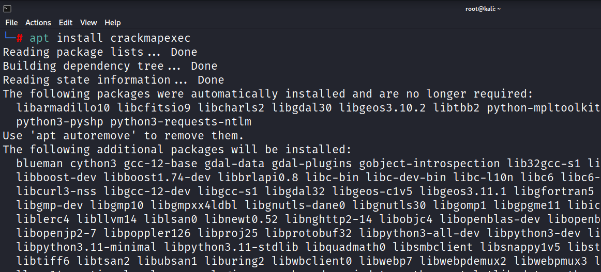

To install crackmapexec:
Command: apt install crackmapexec


As i was not able to install the crackmapexec through the above command so i have installed it through the github directly.
Why not just download a precompiled CME binary from its GitHub?
After unzipping, move the binary to a location in your path and try running it again
Using the precompiled binaries is always going to be recommended over other install methods other than needing python3 in this case